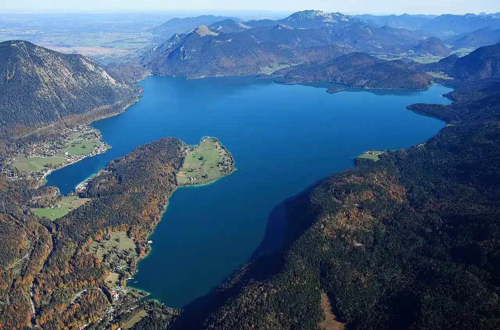

Walchensee
Bavière, Allemagne · windsurf, kitesurf, baignade, paddle

Grand lac alpin aux eaux turquoise, à une heure au sud de Munich, entouré de montagnes. Son vent thermique régulier les après-midi d’été en fait l’un des spots de voile légère les plus connus de Bavière.
- Lieu
- Bavière, Allemagne
- Niveau
- Intermédiaire
- Activités
- windsurf, kitesurf, baignade, paddle
- Type d'eau
- lake
- Coordonnées
- 47.62, 11.34 (position approximative du secteur)
Dangers à connaître
- Eau froide et profonde, même en plein été.
- Vent thermique qui forcit l’après-midi et rafales descendant des montagnes.
Le conseil d'Ocean Buddy
Le kite n’y est autorisé que dans certaines zones et à certaines conditions : renseigne-toi sur place avant de gonfler ton aile.
Ouvrir dans Ocean Buddy Télécharger sur l'App Store
Source : Fiche Ocean Buddy · septembre 2026 · à vérifier localement.